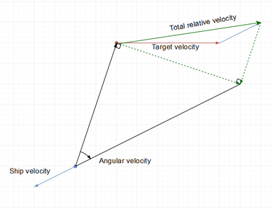
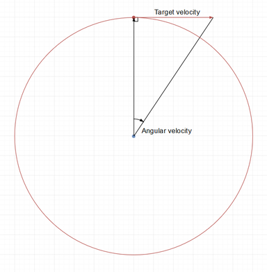

炮台机制决定炮台命中有多精确和伤害有多高。很明显的是，这两者是相互联系的，因为射击未命中直接影响到造成的伤害，但是命中和伤害机制确实也在另一方面上紧密相连。
有两件最基本的事影响你使用带有炮台的装备命中目标的机会：射程和跟踪速度。这篇指导依次解释了每一个影响因素，并探索其中一些因素在战斗中切实可行的推断。第二段将聚焦于伤害是如何计算的以及命中率如何影响伤害的分布。对这个机制有一个基本的理解对于每一个在EVE中驾驶基于炮台的舰船，或者是希望避免被1400毫米火炮击中的人来说都很重要。
命中率是一个基于两个参数：跟踪速度和射程，的确定精准度百分比的指数表达式。这两个参数，和由此而来的命中率值，由两艘参与的舰船和她们之间的相对运动决定。目标越是符合炮台的正确射程和跟踪速度参数，命中率就越高，最高可达1.00的可能（100%）。
当炮台射击时，游戏生成一个在0和1之间的随机小数。这个数值接着被用在在下面描述的命中数学和伤害等式中。这个随机数被使用了两次：
射击炮台的基本问题是你是否会击中。在EVE中，用炮台射击并不是一个简单的在射程内或在射程外的问题。相反，它取决于最佳射程、失准范围和跟踪速度等概念。如果你看一下你装备的炮台信息，你可以找到所有这些的数字。
由于命中率的计算方式，射程和跟踪并不互相影响，可以分开考虑。要记住的一件事是，面对静止的目标，跟踪部分可以忽略，而面对处于最佳射程的目标，射程部分可以忽略。
每一个炮台都会有两个射程参数，分别叫做“最佳射程”和“失准范围”。
一门炮的最佳射程是距离在此射程内对命中率没有影响的射程。换而言之，在最佳射程内的距离可以被完全忽略，而跟踪速度是唯一对命中有影响的。
失准范围从最佳射程的末端开始。失准范围衡量的是，当目标距离超过最佳射程时，命中率下降的速度。在一门炮的最佳射程加上它的失准范围，命中率减少到50%。在一门炮的最佳射程加上两倍的失准范围时，命中率只减少到6.25%。由于其他因素会进一步降低这一命中率，在过远的射程上，通常根本不值得炮台射击，除非你试图吸引怪的仇恨（这可以在最大锁定距离上做到）。
因此，举例来说，你用一门具有20公里最佳射程和6公里失准范围的炮，向一个稳定地从你身边直线移动（横向为零）的目标开火，开始时只有1公里的距离。你将（如果没有其他干扰）总是击中离你不到20公里（你的最佳射程）的目标；当你的目标在离你20公里和26公里（你的最佳射程+偏移）之间移动时，你的命中率将逐渐降低，在26公里时达到50%。到了32公里（最佳射程+两倍的偏移量），你的命中率将下降到6.25%，而且还在下降。
超过最佳射程少量的惩罚是相当低的；在超过最佳射程的33%的失准范围内击中目标的机会仍然在90%以上。特别是米玛塔尔舰船有很大的失准范围，使它们能够在其最佳射程之外有效地作战。然而，随着距离的增加，命中率下降的速度也越来越快。
当使用在失准范围内作战的炮台时，知道处于最佳射程加上二分之一失准范围会导致减少20%的平均伤害，而处于最佳射程加成失准范围会导致减少60%的平均伤害（注意：由于随机伤害区间的计算方式，平均伤害的下降速度比命中率快，见下文）。
在炮台信息窗口中可以看到失准范围和最佳射程。它们会被技能、弹药、模块、船体奖励和来袭的索敌干扰器进一步修改。锁定距离在概览中是可见的。
跟踪速度是指炮台对移动目标的命中效果。如果目标相对于射手来说是静止的，跟踪就会被忽略，只有射程会影响命中率。如果目标既在最佳射程内又是静止的，炮台就有100%的机会击中。因此，对于静止的目标，炮台的跟踪是不相关的，如果目标愚蠢到坐着不动，即使是最大的炮台也能击中最小的目标。
这就是为什么尽管护卫舰的信号半径非常小，但一排战列舰的炮却有可能击中护卫舰，造成巨大的伤害（正如上文所说的）：如果护卫舰坐着不动，或直接朝向或远离战列舰，或处于足够远的距离，尽管它的速度很快，但从战列舰的角度来看，它的角速度不大，那就完蛋了。
对于应付移动目标，跟踪速度是比射程更复杂的概念，因为变量数量更多，变量更不直观，玩家看不到所有的变量，而且变量会混乱地变化。追踪取决于三个变量。"炮台跟踪速度"，角速度和目标信号半径。
炮台跟踪值的概念很简单。炮台越小，其跟踪速度就越快：例如，小型自动火炮比中型自动火炮的跟踪速度快。短程的炮台类型比长程的炮台有更好的追踪能力--所以，例如，中型脉冲激光器的跟踪速度比中型光束激光器快，大型疾速炮的追踪速度比大型轨道炮快。与射程的最佳和衰减不同，跟踪速度只有一个值。有一种方法是将炮台视为始终处于 "跟踪衰减 "状态，最佳跟踪速度为零。
不仅可以用米每秒或英里每时来衡量一个物体的速度，还可以用角度来衡量一个速度。一个很好的例子是太阳在天空中的运动，它在24小时内移动360°，这使得角速度为15度每小时。
 正如一个圆可以被描述为360度的角度一样，它也可以被描述为2π弧度的角度，也就是说，一个弧度大约等于57度（360/2π）。
如果你打开设置，在 "列 "标签下勾选一个方框，游戏概览可以显示目标的角速度。角速度被用来确定基于炮台跟踪能力的命中率的惩罚。依靠高角速度来生存的方式被称为速度抗（不要和风筝混为一谈，风筝是在射程内保持某种东西）。
角速度的计算方法是$ω=\frac{v_t}{d}$，其中$v_t$是目标相对于射手的横向速度，d是与目标的距离。两艘船对彼此的角速度总是相同的。